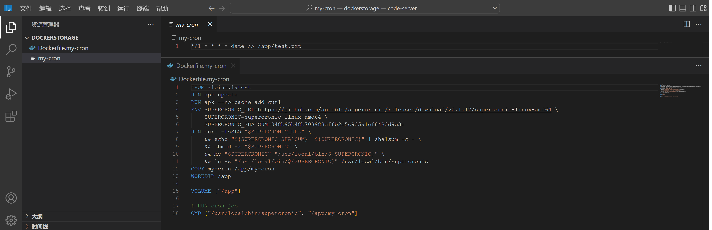
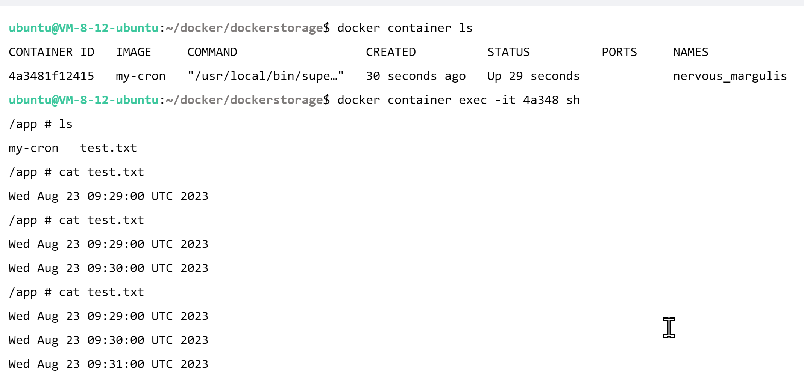
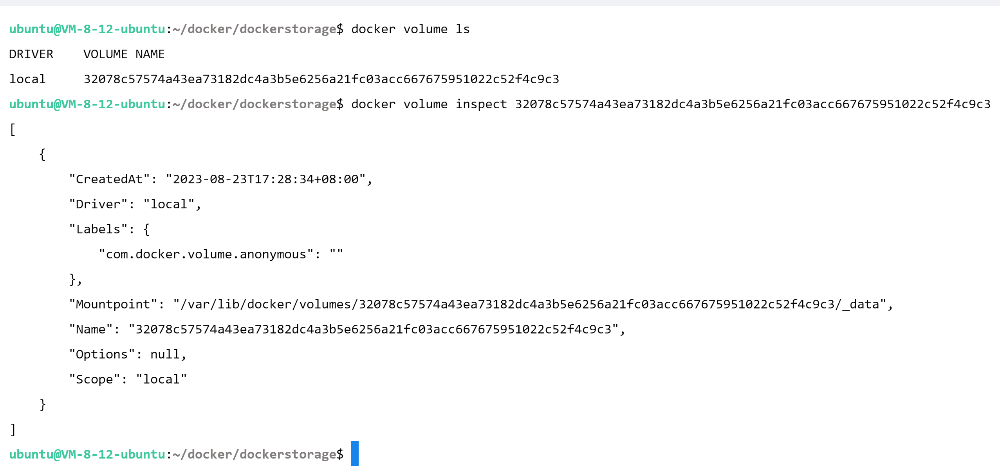
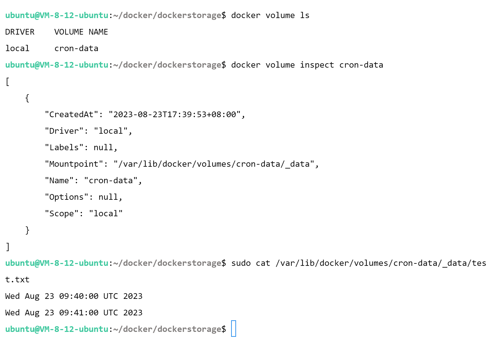
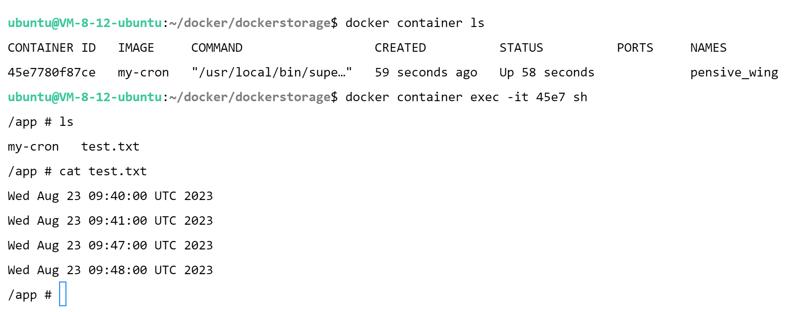
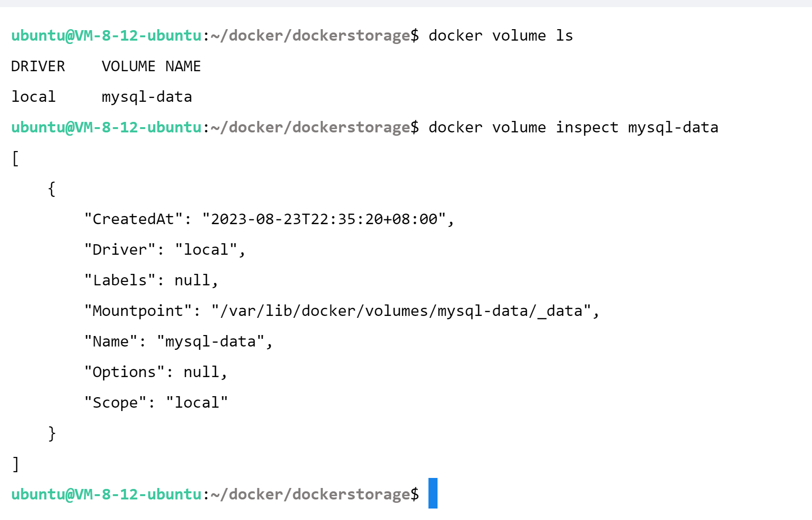
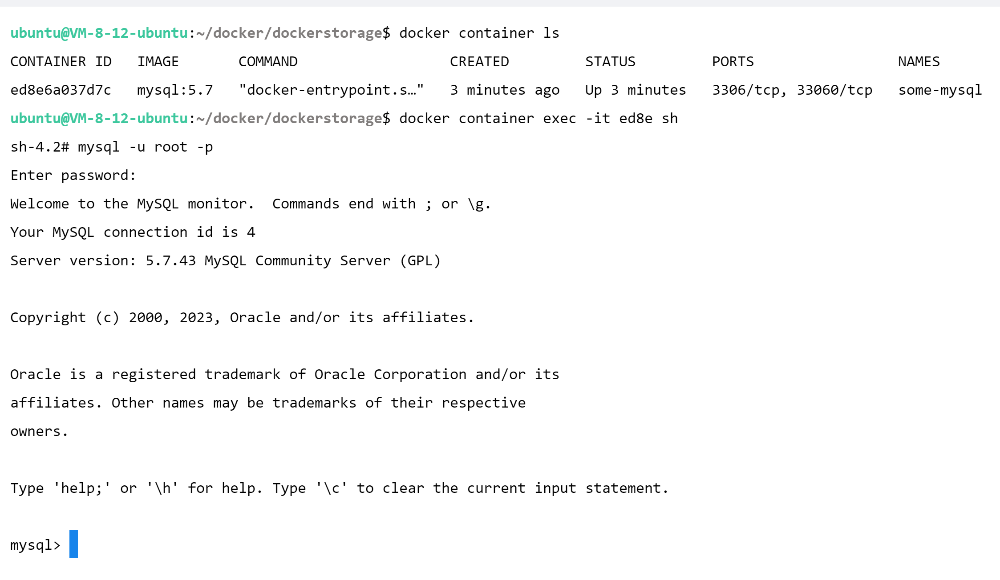
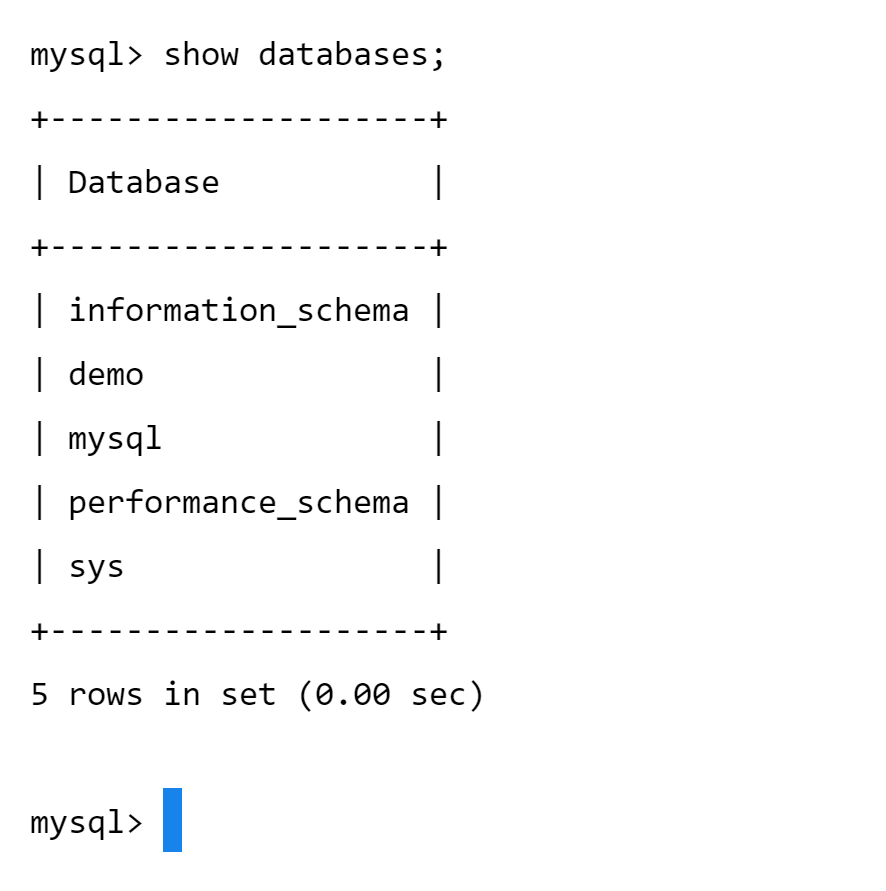
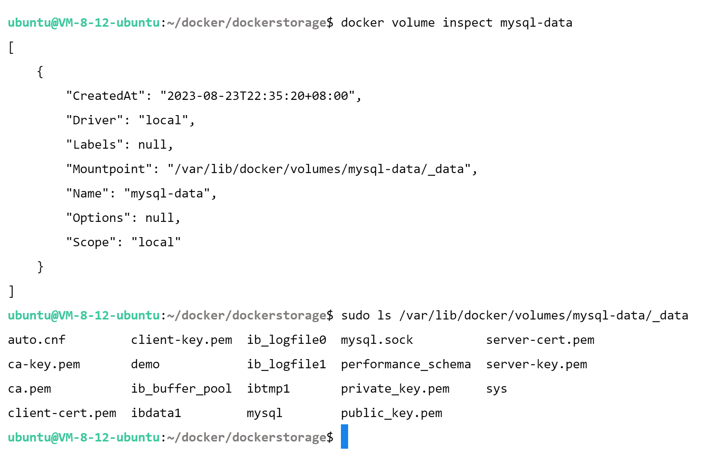

Volume

举例：
Dockerfile.my-cron
1 2 3 4 5 6 7 8 9 10 11 12 13 14 15 16 17 18 FROM alpine:latestRUN apk update RUN apk --no-cache add curl ENV SUPERCRONIC_URL=https://github.com/aptible/supercronic/releases/download/v0.1.12 /supercronic-linux-amd64 \ SUPERCRONIC=supercronic-linux-amd64 \ SUPERCRONIC_SHA1SUM=048 b95b48b708983effb2e5c935a1ef8483d9e3e RUN curl -fsSLO "$SUPERCRONIC_URL " \ && echo "${SUPERCRONIC_SHA1SUM} ${SUPERCRONIC} " | sha1sum -c - \ && chmod +x "$SUPERCRONIC " \ && mv "$SUPERCRONIC " "/usr/local/bin/${SUPERCRONIC} " \ && ln -s "/usr/local/bin/${SUPERCRONIC} " /usr/local/bin/supercronic COPY my-cron /app/my-cron WORKDIR /app VOLUME ["/app" ] CMD ["/usr/local/bin/supercronic" , "/app/my-cron" ]
Dockerfile \text {Dockerfile} Dockerfile SuperCronic \text {SuperCronic} SuperCronic SuperCronic \text {SuperCronic} SuperCronic volume \text {volume} volume
FROM alpine:latest：指定基础镜像为 Alpine Linux \text {Alpine Linux} Alpine Linux RUN apk update：更新 Alpine \text {Alpine} Alpine RUN apk --no-cache add curl：安装 curl \text {curl } curl ENV：设置环境变量，用于后续的 SuperCronic \text {SuperCronic} SuperCronic
SUPERCRONIC_URLSUPERCRONICSUPERCRONIC_SHA1SUM
使用 curl 下载 SuperCronic \text {SuperCronic} SuperCronic
curl -fsSLO "$SUPERCRONIC_URL"：下载 SuperCronic \text {SuperCronic} SuperCronic echo "${SUPERCRONIC_SHA1SUM} ${SUPERCRONIC}" | sha1sum -c -：校验和验证文件的完整性。chmod +x "$SUPERCRONIC"：为文件添加可执行权限。mv "$SUPERCRONIC" "/usr/local/bin/${SUPERCRONIC}"：将 SuperCronic \text {SuperCronic} SuperCronic /usr/local/bin 目录下。ln -s "/usr/local/bin/${SUPERCRONIC}" /usr/local/bin/supercronic：创建到 SuperCronic \text {SuperCronic} SuperCronic
COPY my-cron /app/my-cron：将名为 my-cron 的定时任务文件复制到容器内的 /app 目录。WORKDIR /app：设置工作目录为 /app，即所有后续命令都在这个目录下执行。VOLUME ["/app"]：定义数据卷，将容器内的 /app 目录映射到主机，用于持久化容器内的数据。CMD ["/usr/local/bin/supercronic", "/app/my-cron"]：设置容器启动时默认运行的命令，即运行 SuperCronic \text {SuperCronic} SuperCronic
my-cron
1 */1 * * * * date >> /app/test.txt
构建 my-cron \text {my-cron} my-cron
1 docker buildx build -f Dockerfile.my-cron -t my-cron .
启动容器：
1 docker container run -d my-cron
进入容器，
1 docker container exec -it my-cron sh
间隔一定时间，可以观察到已经产生了测试文件输出：

退出并删除容器：
1 docker container rm -f my-cron
Usage \text {Usage} Usage
Manage volumes \text {Manage volumes} Manage volumes
Commands
createCreate a volume \text {Create a volume} Create a volume
inspectDisplay detailed information on one or more volumes \text {Display detailed information on one or more volumes} Display detailed information on one or more volumes
lsList volumes \text {List volumes} List volumes
pruneRemove all unused local volumes \text {Remove all unused local volumes} Remove all unused local volumes
rmRemove one or more volumes \text {Remove one or more volumes} Remove one or more volumes

创建容器（指定 -v 参数）
可以修改 Dockerfile.my-cron ：
1 2 3 4 5 6 7 8 9 10 11 12 13 14 15 16 FROM alpine:latestRUN apk update RUN apk --no-cache add curl ENV SUPERCRONIC_URL=https://github.com/aptible/supercronic/releases/download/v0.1.12 /supercronic-linux-amd64 \ SUPERCRONIC=supercronic-linux-amd64 \ SUPERCRONIC_SHA1SUM=048 b95b48b708983effb2e5c935a1ef8483d9e3e RUN curl -fsSLO "$SUPERCRONIC_URL " \ && echo "${SUPERCRONIC_SHA1SUM} ${SUPERCRONIC} " | sha1sum -c - \ && chmod +x "$SUPERCRONIC " \ && mv "$SUPERCRONIC " "/usr/local/bin/${SUPERCRONIC} " \ && ln -s "/usr/local/bin/${SUPERCRONIC} " /usr/local/bin/supercronic COPY my-cron /app/my-cron WORKDIR /app CMD ["/usr/local/bin/supercronic" , "/app/my-cron" ]
1 docker buildx build -f Dockerfile.my-cron -t my-cron .
并在容器运行指定 -v 参数
1 docker container run -d -v cron-data:/app my-cron
效果同上。
（删除之前的 volume \text{volume} volume

现在重新创建新的容器，使用之前的 volume \text{volume} volume

数据会被保留下来！
Demo：MySQL
拉取镜像
创建容器
1 docker container run --name some-mysql -e MYSQL_ROOT_PASSWORD=solisamicus -d -v mysql-data:/var/lib/mysql mysql:5.7

MySQL(root)数据库

写入数据

查看Volume

Bind Mount
Bind Mount \text {Bind Mount} Bind Mount Docker \text {Docker} Docker Bind Mount \text {Bind Mount} Bind Mount Bind Mount \text {Bind Mount} Bind Mount Volume \text {Volume} Volume Bind Mount \text {Bind Mount} Bind Mount Docker \text {Docker} Docker
将上面的命令修改为：
1 docker container run --name some-mysql -e MYSQL_ROOT_PASSWORD=solisamicus -d -v $(pwd):/var/lib/mysql mysql:5.7
即可。